Umi
Umi · Fukuoka
Umi
Highlighted on the Fukuoka map.
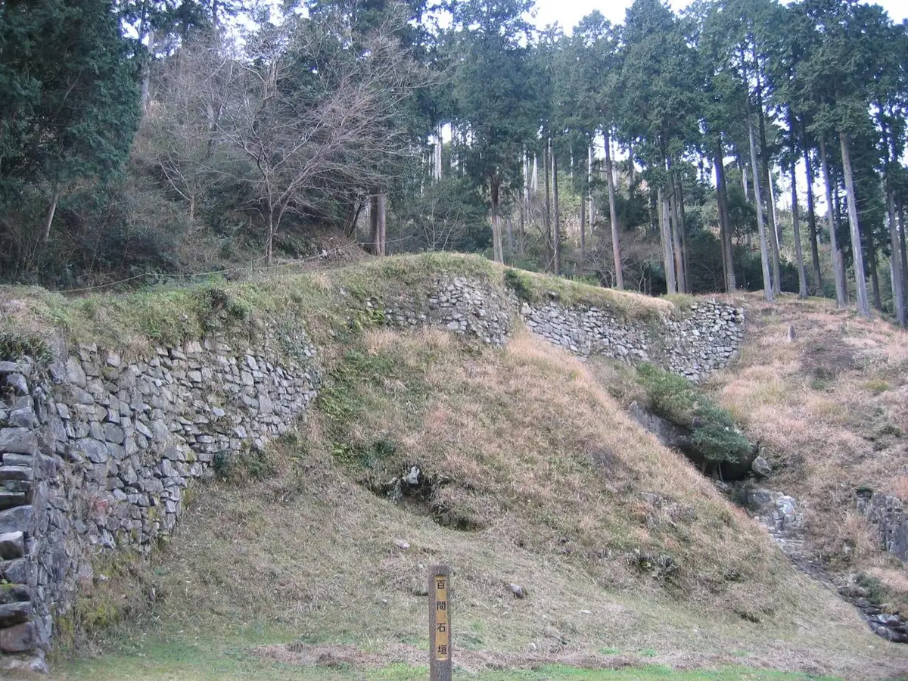
Dining
La Festa
La Festa
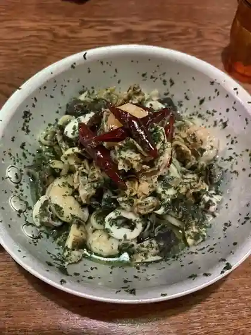
煮干しのビリー
Niboshi Shino Birii
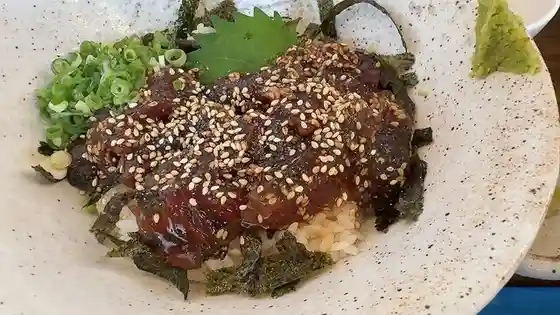
竜宮の鯖
Ryuuguu No Saba
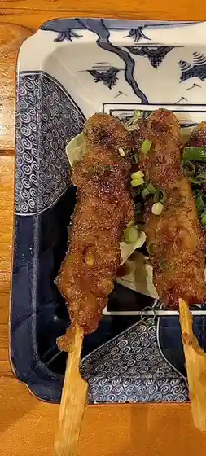
麺屋 だいくう
Men Ya Daikuu
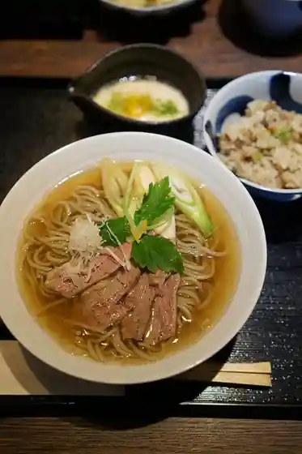
しょうけそば 竹亭
Shoukesoba Chikutei
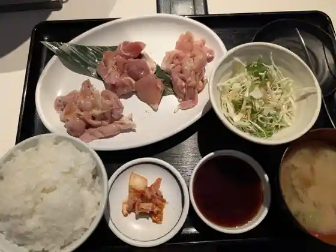
とり焼肉 カルビ家
Tori Yakiniku Karubi Ie
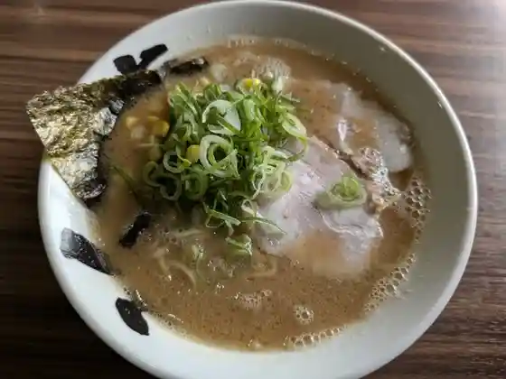
ラーメン新蔵
Raamen Shinzou
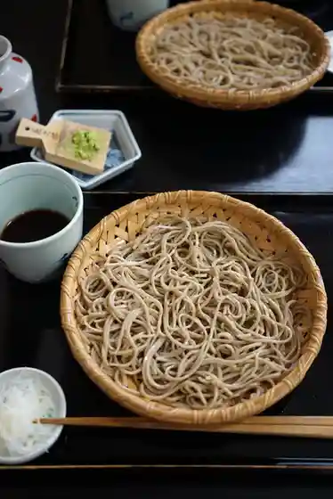
そば処 松本
Soba Tokoro Matsumoto
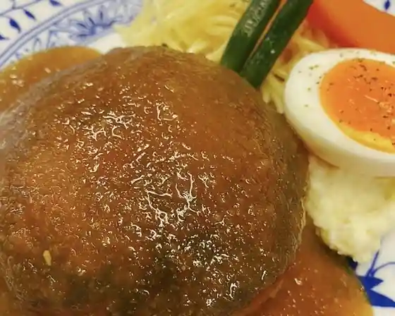
ＨＡＹＡＳＨＩ
HAYASHI
季のせ
Ki Nose
食事処 ファイン・クック こと
食事処 ファイン・クック こと
中華料理 福源
Chuukaryouri Fuku Gen
信樂食堂
Shigaraki Shokudo
駒や 総本店
Koma Ya Souhonten
こやすもち
Koyasumochi
宝龍
Houryuu
えぞっ子 宇美店
Ezotsu Ko Umi Mise
けんた
Kenta
鯛笑 宇美八幡宮店
Tai Warai Umi Hachimanguu Mise
gringrin宇美
gringrin
福龍ラーメン
Fuku Ryuu Raamen
NADO
NADO
TSUKINI
TSUKINI
Luna soft
Luna soft
万里
Banri
ケイズ
Keizu
パティスリーF
Pateisurii F
茶房 うみはち
Sabou Umihachi
アンアン
An'an
ヨシュア ツリー
Yoshua Tsurii
和処 月歩
Wa Tokoro Geppo
パン・ファースト
パン・ファースト
SMILE LABO
SMILE LABO
咲々園
Saki (kurikaesi) Sono
ニコッツカフェ
Nikottsukafe
ホイアン飲食店
Hoian Inshokuten
ちょこっとYORIMICHI
YORIMICHI
ウエスト 宇美店
Uesuto Umi Mise
サンヴィバン
Sanviban
やきとり鳥石
Yakitori Tori Ishi
ほかほか弁当 宇美店
Hokahoka Bentou Umi Mise
おのちゃん
Onochan
酔R処
Sui R Tokoro
PLUS 宇美店
PLUS
ジョイフル 宇美店
Joifuru Umi Mise
ぎんが倶楽部
Ginga Kurabu
小林酒造
Kobayashi Shuzou
山下商店
Yamashita Shouten
焼き鳥いちかばちか
Yakitori Ichikabachika
焼とり大将
Yaki Tori Taishou
庄屋 宇美店
Shouya Umi Mise
どんどん亭 宇美店
Dondon Tei Umi Mise
やきとり大助
Yakitori Daisuke
お弁当のひので屋 宇美店
O Bentou Nohinode Ya Umi Mise
KARMA 宇美町店
KARMA
焼肉さく
Yakiniku Saku
corie料理店
corie
ケーキラボラトリーリリアン
Keekiraboratoriiririan
想夫恋 宇美店
Soufu Koi Umi Mise
ビッグベアーズ 宇美店
Biggubeaazu Umi Mise
ピザポケット 宇美店
Pizapoketto Umi Mise
筑前茶屋
Chikuzen Chaya
循環レストラン のあ
Junkan Resutoran Noa
スーパーセンタートライアル 宇美店
Suupaasentaatoraiaru Umi Mise
CAKE+ 8がつ8にち
CAKE 88
菓房 野乃香
Kabou No No Kaori
橋本鮮魚
Hashimoto Sengyo
ねこねこパン
Nekoneko Pan
ほっともっと 宇美町店
Hottomotto Umi Machi Mise
ほっともっと 宇美東店
Hottomotto Umi Higashi Mise
メゾン ド リリアン 宇美八幡宮前店
Mezon Do Ririan Umi Hachimanguu Mae Mise
とよ唐亭 宇美店
Toyo Tou Tei Umi Mise
福庄中華料理
Fuku Shou Chuukaryouri
ダイレックス 宇美店
Dairekkusu Umi Mise
やき鳥炭焼本陣
Yaki Tori Sumiyaki Honjin
マルト醤油
Maruto Shouyu
宅配専門 玄海ざんまい 粕屋宇美店
Takuhai Senmon Genkai Zanmai Kasuya Umi Mise
すえつぐ
Suetsugu
寿し豊
Hisashi Shi Yutaka
高砂味噌
Takasago Miso
アルゾ 宇美店
Aruzo Umi Mise
さとちゃん珈琲
Satochan Koohii
カーサ チョコ
Kaasa Choko
スナックはな
Sunakku Hana
アイライズ工房
Airaizu Koubou
酔家
Sui Ie
Yay
Yay
Fujiya Umi Fukuoka
Fujiya Umi Fukuoka
Sapporo Ramen Ezokko Umi
Sapporo Ramen Ezokko Umi
Chinese Restaurant Fukugen
Chinese Restaurant Fukugen
Hakata Meizen
Hakata Meizen
Joyfull
Joyfull
Shoya Umi
Shoya Umi
Horyu
Horyu
West Umi
West Umi
Sofuren Umi
Sofuren Umi
Ramen Shinzo
Ramen Shinzo
Senryu Ramen
Senryu Ramen
Umihachiman Chaya
Umihachiman Chaya
Croquette Club Umi
Croquette Club Umi
Mammaru Maruchan
Mammaru Maruchan
Martin Umi Machi
Martin Umi Machi
Soba Matsumoto
Soba Matsumoto
Sushi Yoshi
Sushi Yoshi
Purnima
Purnima
Sammikaku
Sammikaku
Yu Yu Tei
Yu Yu Tei
Gochiso Ya Yori Dokoro
Gochiso Ya Yori Dokoro
West Umitempura Corner
West Umitempura Corner
Wadokoro Geppo
Wadokoro Geppo
Ichika Bachika
Ichika Bachika
Wakasugiyama Umi
Wakasugiyama Umi
Yamachan Shokudo
Yamachan Shokudo
Den En
Den En
St Vivant
St Vivant
Ajihiro
Ajihiro
Texas Longhorn Fukuoka
Texas Longhorn Fukuoka
Shichifukutei
Shichifukutei
Fukuichi
Fukuichi
Warm Lunch Umi
Warm Lunch Umi
Izakaya Gansho
Izakaya Gansho
Yakitori Zen
Yakitori Zen
Sushitoyo
Sushitoyo
Yakitoritaisho
Yakitoritaisho
Shinzushi
Shinzushi
Rakki
Rakki
Marufune Umi
Marufune Umi
Dommakku Umi
Dommakku Umi
Dining Bar Miki No Ie
Dining Bar Miki No Ie
Karaageya
Karaageya
Cafe Restaurant First
Cafe Restaurant First
Exposure
Exposure
Chidoriya Umi
Chidoriya Umi
Pop Art
Pop Art
Yakitori Bar Danran
Yakitori Bar Danran
Ajisai
Ajisai
Sights
Hojoe
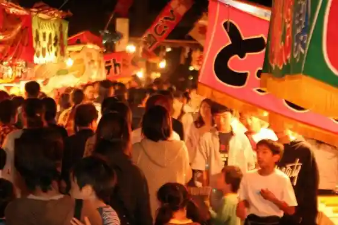
Shioji Kenmin Forest (Wanherusu Forest)
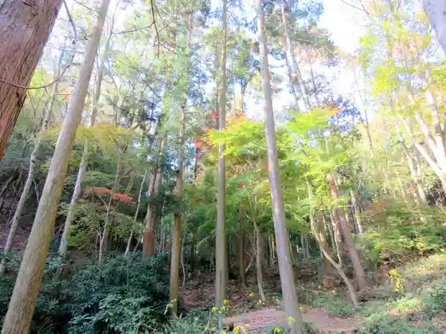
Ono Castle Ruins
Umi Hachiman Shrine (Umi)
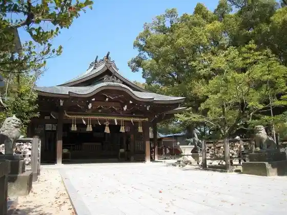
Ipponmatsu Park (Showa Forest)
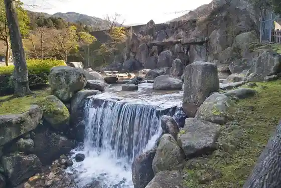
Mori Hakata Shoku Chokubai Tokoro Ori Aguri (Hakata Shokko Ba Kengaku)
Kawara Tani no Dai Tsurara (Tsusho : Nanshogataki)
Mandai Sake Workshop
Koyasu Taisai
Kobayashi Shuzo Main Shop
Mitsumasa Tera Burial Mound
Umi Park
Umi Ritsu Folk History Museum